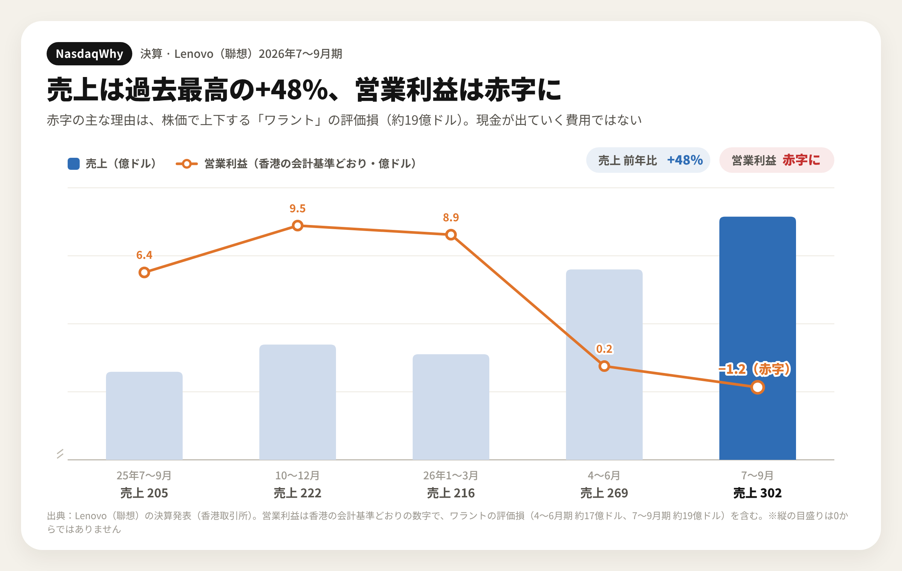
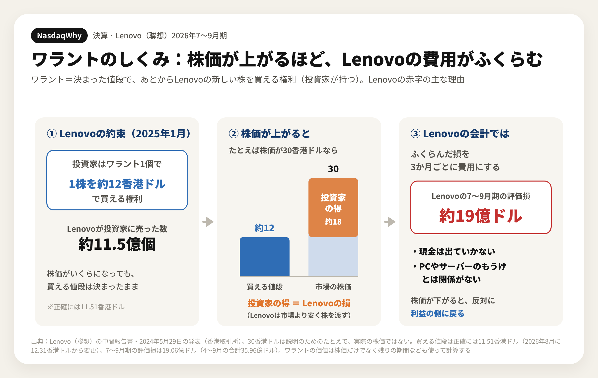
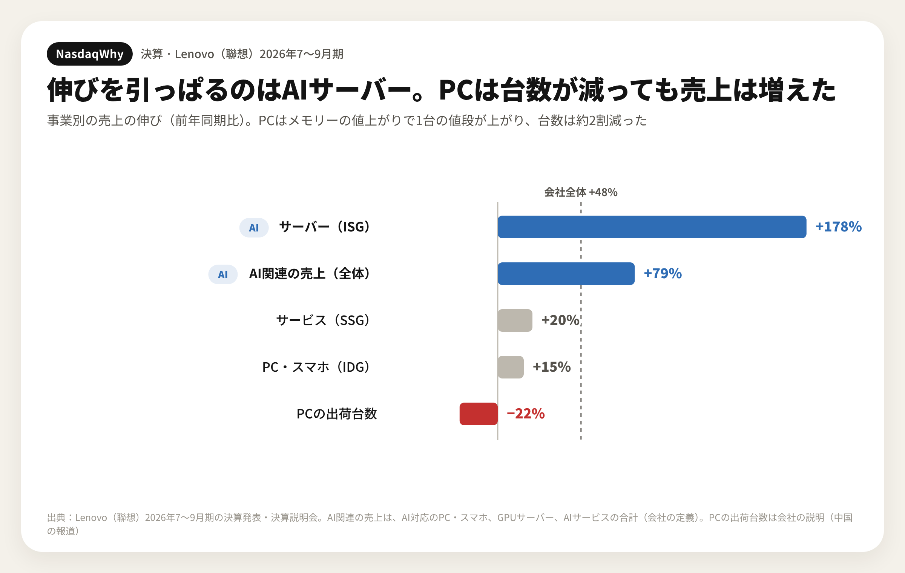
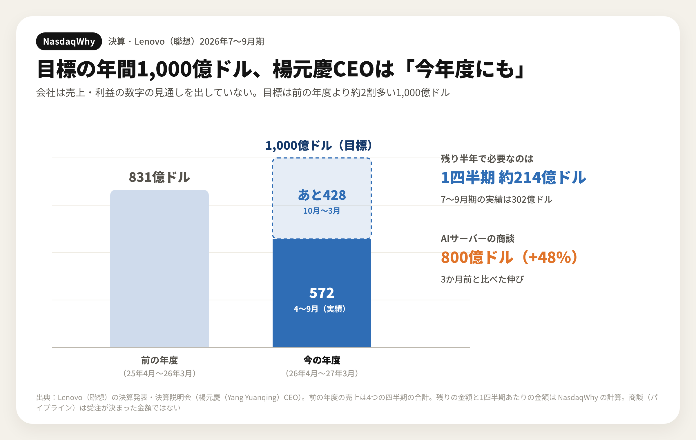
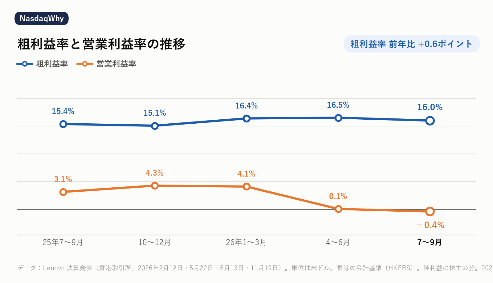
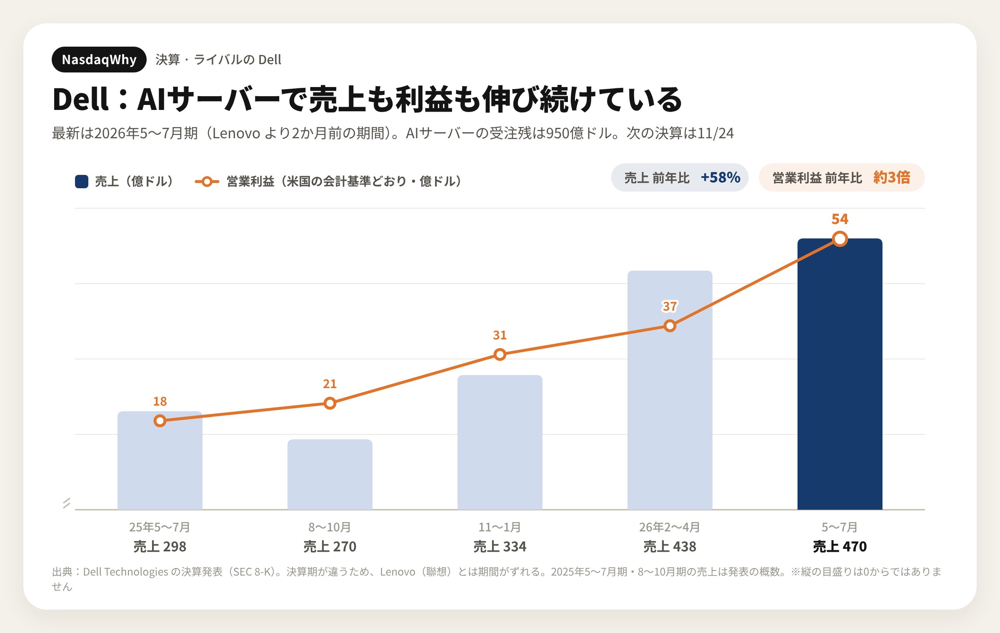
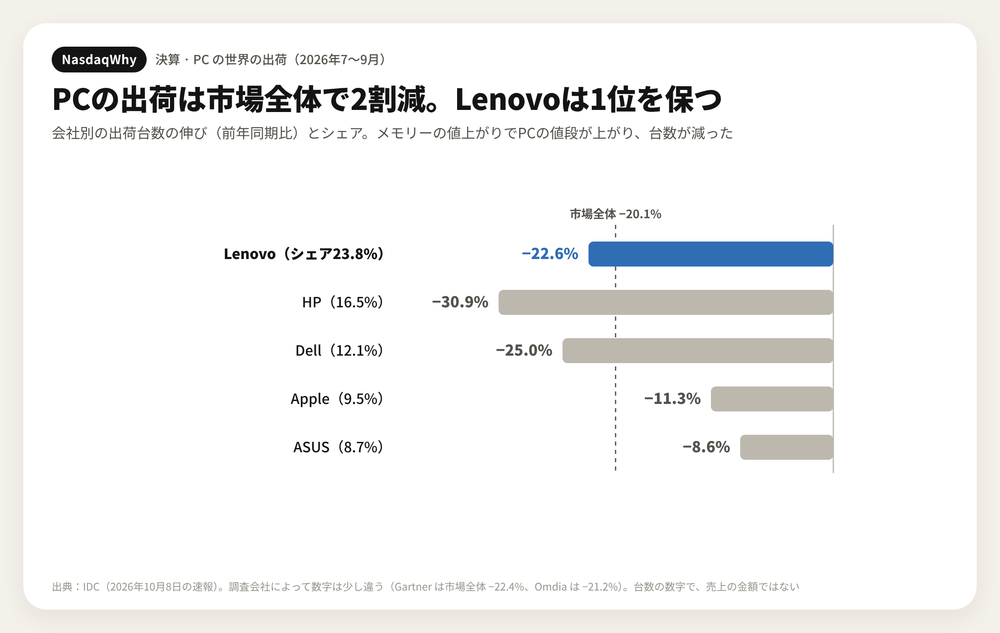

0992｜2026年7〜9月期の決算｜決算発表 2026年11月19日（香港の取引時間中）
Lenovo（聯想）の決算：売上は過去最高の+48%なのに、なぜ赤字になった？
PC世界最大手のLenovo（聯想）の7〜9月期は、売上が前年同期比48%増の302億ドルと過去最高だった。AIサーバーを含むサーバー部門（ISG）が+178%と大きく伸びた。PCの世界シェアは23.8%で1位（IDC 調べ。2位のHPとの差は7ポイント以上）、x86サーバーの出荷台数でも世界1位（シェア16%、会社の説明）。一方、営業利益（香港の会計基準どおり）は1.2億ドルの赤字、純利益（株主の分）は6.4億ドルの赤字になった。株価が上がったことで「ワラント（新株予約権）」の評価損が約19億ドル出たためで、これを除いた調整後の純利益は13.6億ドル（+166%）だった。

売上は2025年7〜9月の205億ドルから、302億ドルまで1年で約1.5倍になった。営業利益（香港の会計基準どおり）は10〜12月期の9.5億ドルをピークに、4〜6月期は0.2億ドル、7〜9月期は1.2億ドルの赤字に落ちた。
ただし落ちた主な理由は、株価の上昇でふくらんだワラントの評価損（4〜6月期 約17億ドル、7〜9月期 約19億ドル）。現金が出ていく費用ではなく、事業のもうけが減ったわけではない。会社が出す調整後の純利益は、7〜9月期で13.6億ドル（+166%）だった。
ワラントとは？赤字になったしくみ

ワラントは「決まった値段で、あとからLenovo（聯想）の新しい株を買える権利」のこと。持っているのはLenovoではなく、ワラントを買った投資家。Lenovoは2025年1月、サウジアラビアの政府系ファンド傘下のAlatとの資金集め（20億ドルの転換社債）に合わせて、ワラントを約11.5億個、投資家に売った。投資家は1個で1株を約12香港ドルで買える（正確には11.51香港ドル）。
たとえば株価が30香港ドルに上がると、投資家は約12香港ドルで株を買えるので、1株あたり約18香港ドル得をする。この投資家の得は、そのままLenovoの損になる。Lenovoは市場より約18香港ドル安く株を渡す約束をしているからだ。株価が上がるほど、この損（会計では負債）がふくらむ。
会計のルールでは、Lenovoはこの損の大きさを3か月ごとに計算し直し、ふくらんだ分を費用（評価損）にする。Lenovoの株価は9月にこの1年の高値（37.88香港ドル）をつけるほど上がったため、7〜9月期は約19億ドル、4〜9月の合計で約36億ドルの費用（評価損）になった。9月末のワラントの負債は約37億ドルで、3月末の約1億ドルから大きく増えた（中間報告書）。
ポイントは、現金が出ていく費用ではなく、PCやサーバーの商売のもうけとも関係がないこと。だから会社は、この分を除いた「調整後の純利益」（13.6億ドル、+166%）も出している。逆に株価が下がると、評価損は戻って利益の側に出る。株価は9月の高値から半分以下に下がっているので、次の決算ではこの数字が反対向きに動くこともある（しくみの説明で、会社の見通しではない）。
主な数字（2026年7〜9月期）
| 今回 | 前年同期 | 前年比 | |
|---|---|---|---|
| 売上高 | 302億ドル | 205億ドル | +47.8% |
| 営業利益 | -1.2億ドル | 6.4億ドル | 赤字に転換 |
| 営業利益率 | -0.4% | 3.1% | |
| 純利益 | -6.4億ドル | 3.4億ドル | 赤字に転換 |
7〜9月期の事業別の売上
| 事業 | 売上 | 前年同期比 |
|---|---|---|
| PC・スマホ（IDG） | 174億ドル | +15.0% |
| サーバー（ISG） | 113億ドル | +178.0% |
| サービス（SSG） | 31億ドル | +20.0% |
| AI関連（全体） | 100億ドル超 | +79.0% |
事業別に見ると：伸びているのはAIサーバー
売上の伸びを事業別に並べると、伸びを引っぱっているのはサーバー部門（ISG）の+178%。AI関連の売上は全体で+79%と、会社全体の伸び（+48%）を大きく上回った。
PC・スマホ部門（IDG）は、PCの出荷台数が約22%減ったのに売上は+15%。メモリーの値上がりで1台の値段が上がったことと、高価格帯のPCやタブレット、スマホ（Motorola）が伸びたためだ。
サービス部門（SSG）は+20%の31億ドルで、営業利益率は過去最高の26%。売上は小さいが、利益率はいちばん高い。

会社の見通し
| 数字の見通し | 出していない |
|---|---|
| 年間売上の目標 | 1,000億ドル |
| 純利益率の目標 | 5%超（調整後） |
| PCの需要 | 2〜3四半期弱い |
- 会社は、売上や利益の数字の見通しを出していない。
- 楊元慶（Yang Yuanqing）CEOは、年間の売上1,000億ドルの目標を「早ければ今年度（2027年3月まで）にも達成できる」と話した。4〜9月の売上は572億ドルで、残りの半年で428億ドルあれば届く（NasdaqWhy の計算）。
- 最高財務責任者の Winston Cheng 氏は、調整後の純利益率5%超の目標に近づいていると説明した（7〜9月期は4.5%）。PC事業の責任者は「PCの市場は、この先2〜3四半期は台数が2けた減る弱い状態が続く」と話した。
売上1,000億ドルの目標までの道のり
前の年度（2026年3月まで）の売上は831億ドル。楊元慶（Yang Yuanqing）CEOは、年間1,000億ドルの目標を「早ければ今年度にも」と話した。
4〜9月ですでに572億ドル。残りの半年で428億ドル、1四半期あたり約214億ドルあれば届く計算で、7〜9月期の302億ドルを大きく下回る水準でもよい。AIサーバーの商談（800億ドル）も支えになる。ただし商談は受注が決まった金額ではなく、メモリーなど部品の不足で出荷が遅れるおそれもある。

もうけの力

PC・サーバーの大手と比べると
期間：Lenovo と Super Micro は2026年7〜9月、Dell と HP は2026年5〜7月（決算期が違うため2か月ずれる）。利益率は会計の基準どおりの営業利益率。各社の決算発表から。
| 会社 | 売上高 | 前年比 | 利益率 |
|---|---|---|---|
| Lenovo | 302億ドル | +48% | −0.4% |
| Dell | 470億ドル | +58% | 11% |
| HP | 157億ドル | +12.5% | 5.7% |
| Super Micro | 199億ドル | 約4倍 | 10% |
Lenovo（聯想）の利益率は、ワラントの評価損（約19億ドル、現金は出ていかない）を含む。これを除くと約6%（NasdaqWhy の計算）。事業の中身も違う。Lenovo と Dell はPCとサーバーの両方、HP はPCとプリンター（サーバーはない）、Super Micro はサーバーだけ。Lenovo は香港の会計基準、ほかの3社は米国の会計基準。Dell と HP の次の決算は11/24。
ライバルのDell：AIサーバーの流れ
Dellは5四半期で売上が298億ドルから470億ドルへ、営業利益（米国の会計基準どおり）は18億ドルから54億ドルへ約3倍になった。AIサーバーの受注残は950億ドルある。
Lenovoも売上の伸びは同じくらい速いが、利益はワラントの評価損で見えにくくなっている。Dellの最新の数字は5〜7月期で、8〜10月期の決算は11/24に出る。

PCの出荷を同じ期間で比べると
同じ2026年7〜9月のPCの出荷台数（IDC）は、市場全体で−20.1%。Lenovoは−22.6%と市場より少し大きく減ったが、HP（−30.9%）やDell（−25.0%）よりは小さく、シェア23.8%で1位を保った。
台数が減った理由は、メモリーの値上がりでPCの値段が上がったことと、値上げの前に販売店が早めに仕入れていた反動（IDC・Omdia）。Omdia は10〜12月も−24%と予想している。

決算説明会で会社が話したこと
【部品代の上昇】楊元慶CEOは「短い期間で見ると、部品代の上昇で市場は向かい風」と話した。PC事業の責任者は「台数の減少は、値段の上昇と高価格帯の比率の上昇でほぼ補える」と説明した。
【AIサーバー】商談（パイプライン）は800億ドルに増えた。楊元慶CEOは、伸びを止めているのは需要ではなくメモリーなど部品の不足で、部品がもっと手に入れば、もっと出荷できると話した（中国の報道）。
【サーバーとPCの利益】Cheng 氏は「サーバー部門の営業利益（約11億ドル）は、中心のPC事業とほぼ同じ大きさになった」と話した。
【米国の規制】米国が11/16に出した半導体の新しい規制については「世界中で事業をしているので、大きな影響はない」（楊元慶CEO、Bloomberg の報道）。
【目標】年間の売上1,000億ドルは「早ければ今年度にも」。調整後の純利益率5%超の目標にも近づいている（7〜9月期は4.5%）。
出典：決算説明会の要約（Investing.com）・Bloomberg・星島日報・新浪財経の報道。発言は英語・中国語からの要約。
NasdaqWhy の視点：データから読み取れる注目点
決算資料と各社の公式データを並べて読み取れることです。将来を予想するものではありません。
- 【なぜ売上が48%も増えたか】伸びの中心はサーバー部門（ISG）で、売上は113億ドル（+178%）。GPU（AI用の半導体）を積んだサーバーの売上は3倍超（+300%超）、クラウド大手向けは約2.7倍（+170%近く）、一般の企業・中小企業向けは3倍（+200%）になった。AI関連の売上（AI対応のPC・スマホ、GPUサーバー、AIサービスの合計）は初めて100億ドルを超え（+79%）、売上全体の36%を占めた。
- 【株価の反応】決算を発表した日（11月19日。取引開始前の発表）の終値は16.25香港ドルで、前の日の終値（17.20香港ドル）から5.5%下がった。
- 【なぜ過去最高の売上で赤字か】原因は「ワラント」（決まった値段で、あとからLenovoの新しい株を買える権利）。Lenovoは2025年1月に約11.5億個を投資家に売った。株価が上がるほど、ワラントを持つ投資家は市場より安く株を買えて得をし、その得の分がLenovoの損になる。会計ではこの損を費用にするため、株価が大きく上がった7〜9月期は19.06億ドル（4〜9月の合計で35.96億ドル）の評価損が営業費用に入った（中間報告書）。現金が出ていく費用ではなく、Lenovoは調整後の利益からは除いている。くわしくは「ワラントとは？」の章で。
- 【なぜPCは台数が減っても売上が増えたか】PCの出荷台数は約22%減った。メモリーの値段が大きく上がり、PCの部品代に占めるメモリーと記憶装置の割合が約15%から約40%に上がったため（Omdia）、PCの値段が上がって買う人が減った。それでもLenovoは1台の平均の値段が2けた上がり、高価格帯のPCが出荷の63%に増えた。スマホ（Motorola）も7〜9月期として過去最高の売上。PC・スマホ部門（IDG）の売上は174億ドル（+15%）、営業利益率は7.1%を保った。
- 【なぜサーバーがもうかるようになったか】サーバー部門の営業利益は初めて10億ドルを超え、利益率は過去最高の9.6%。2025年10〜12月期には、この部門で2.85億ドルのリストラ費用を出していた。Cheng 氏は「サーバー部門の営業利益（約11億ドル）は、中心のPC事業とほぼ同じ大きさになった」と話した。AIサーバーの商談（パイプライン）は800億ドルで、3か月前より48%増えた。客には前払いなどを求め、代金の回収のリスクをおさえているという。
- 【決算説明会から】楊元慶CEOは「短い期間で見ると、部品代の上昇で市場は向かい風」と認めた。一方で「AIサーバーの伸びを止めているのは需要ではなく、メモリーなど部品の不足」と説明（中国の報道）。米国が11/16に出した半導体の新しい規制については「Lenovoは世界中で事業をしているので、大きな影響はない」（Bloomberg の報道）と話した。Cheng 氏は、800億ドルの商談のうち500億ドル以上は中国の客と関係がない、と説明したという（星島日報）。
- 【お金の流れ】営業キャッシュフローは16億ドル、フリーキャッシュフローは12億ドル。研究開発費は7.94億ドル（+37%）と増やした。中間配当は1株9香港セント。売上は市場の予想（LSEG 集計で約276億ドル）を上回ったが、純損益は予想（約0.4億ドルの赤字）より大きな赤字だった。
- 【同業と比べると】ライバルのDell（2026年5〜7月期）は売上470億ドル（+58%）、営業利益率11%で、AIサーバーの受注残は950億ドル。Lenovoの売上の伸び（+48%）はDellに近いが、利益率はワラントの評価損で−0.4%と低い。評価損を除くと約6%（NasdaqWhy の計算）。PCの出荷台数（2026年7〜9月、IDC）は、Lenovo −22.6%、HP −30.9%、Dell −25.0%で、Lenovoは市場全体（−20.1%）より少し大きく減ったが、HPやDellよりは小さかった。
- 【比べるときの注意】Lenovoは香港の会計基準で、米国の会社とは利益の数え方が少し違う。決算期は3月までの1年で、7〜9月期は会社の数え方では「2026/27年度の第2四半期」。Dell と HP は決算期が違い、最新の数字は5〜7月期。PCのシェアは調査会社で違う（Lenovoは IDC で23.8%、Gartner で27.1%、Omdia で25.7%）。
次に確認したい決算・予定
- Dell と HP の決算（どちらも11/24）：AIサーバーの受注と、メモリーの値上がりがPCの売れ行きにどう響いたか。
- Xiaomi（小米、11/24）の決算：スマホとPCの部品代の上昇の影響。
- Lenovoの次の決算（2027年2月ごろの見込み）：年間1,000億ドルに届くペースか、ワラントの評価損が続くか（株価しだい）、サーバー部門の利益率。
関連リンク
出典：Lenovo（聯想）2026年7〜9月期の決算発表（2026年11月19日、香港取引所）・中間報告書（ワラントの評価損）・4〜6月期（8月）・1〜3月期（5月）・10〜12月期（2月）の決算発表・決算説明会（Investing.com の書き起こし、Bloomberg・The Next Web・星島日報・新浪財経の報道）。PCのシェアは IDC・Gartner・Omdia（2026年10月）。同業は Dell・HP・Super Micro の決算発表（SEC）
📝 note でも読めます（図つき・まとめ）：note.com/nasdaqwhy